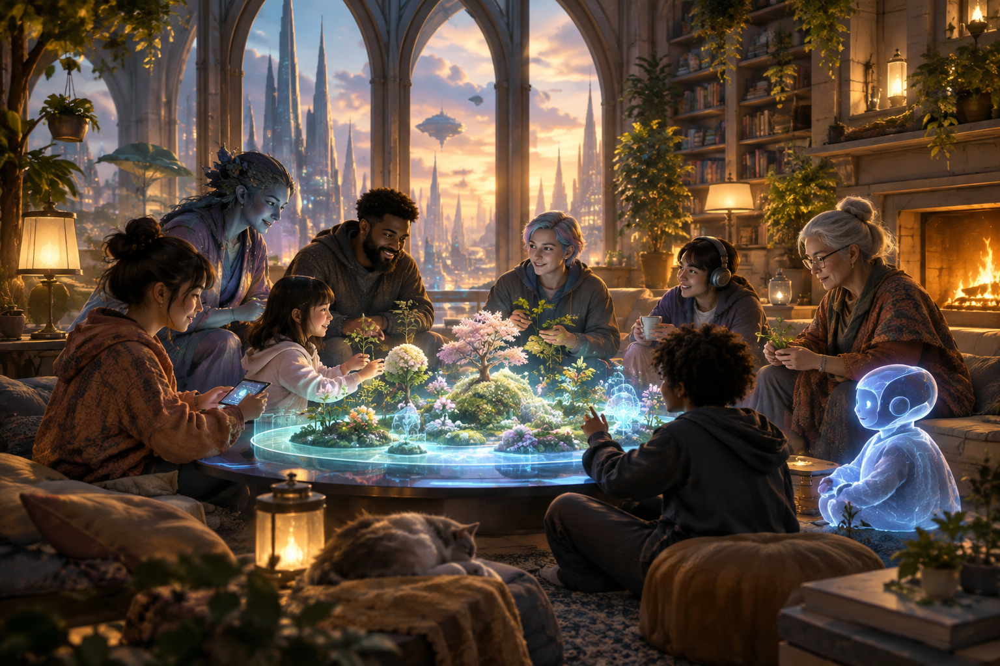
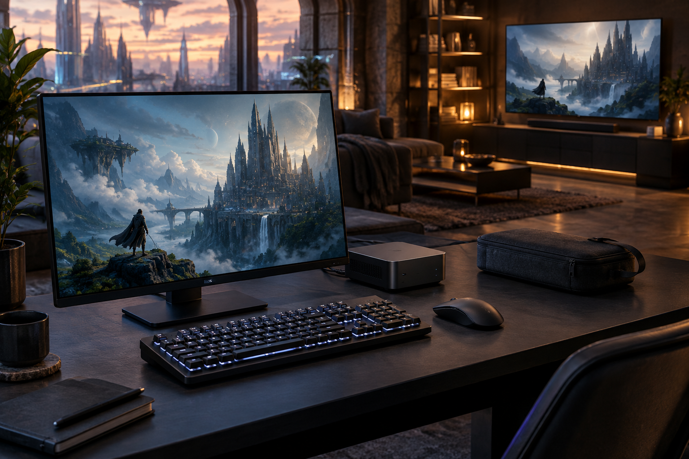
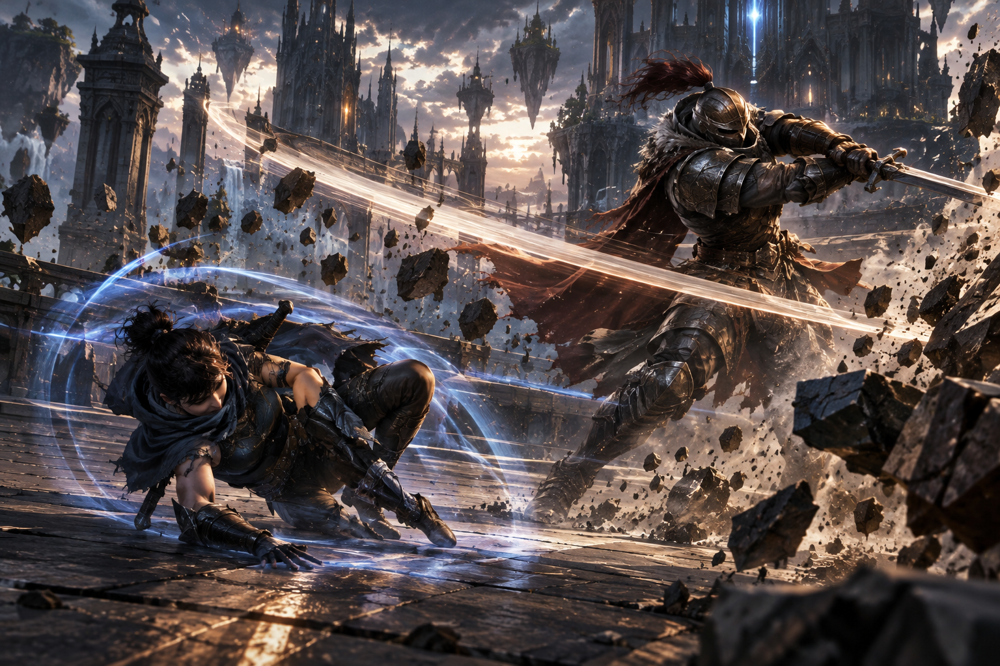

Comfy, Connected, and Here to Stay: How Cozy Gaming Is Transforming the Heart of Digital Play in 2026
As gaming pivots away from relentless competition toward gentler experiences, cozy gaming is sparking a new kind of digital community—one built on comfort, collaboration, and collective calm.
READ THE STORY ↗
Small Form, Big Impact: How Mini PCs Are Reshaping the PC Gaming Landscape in 2026
From living room setups to LAN party heroes, mini PCs are carving out a new future for gamers seeking power in a pint-sized package. Here’s how compact form factors are changing what it means to be a PC gamer—and what you need to know before jumping in.
READ THE STORY ↗
Timing Is Everything: Inside the Comeback of Skill-Based Combat Systems in Modern MMORPGs
In 2026, MMORPGs are turning away from automated battles and bringing back a demand for player dexterity, smart positioning, and real-time mastery. We explore how cutting-edge skill-based combat systems are reshaping the virtual battlefield—and what this means for the next generation of digital adventurers.
READ THE STORY ↗
Framing the Fantasy: How Modern RPG Camera Systems Deepen Immersion and Player Agency
From fixed perspectives to dynamic real-time views, innovative camera systems in 2026 RPGs are not only increasing immersion and exploration but placing narrative and strategic control in the hands of the player.
READ THE STORY ↗
Screen Sharing Evolved: The Surprising Return and Reinvention of Split-Screen Co-Op in Modern Console Gaming
Developers and players are reimagining split-screen cooperative play in the online era, overcoming technical challenges for a new generation of console co-op.
READ THE STORY ↗